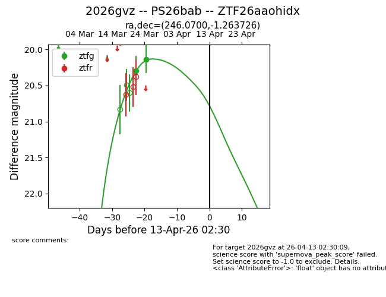
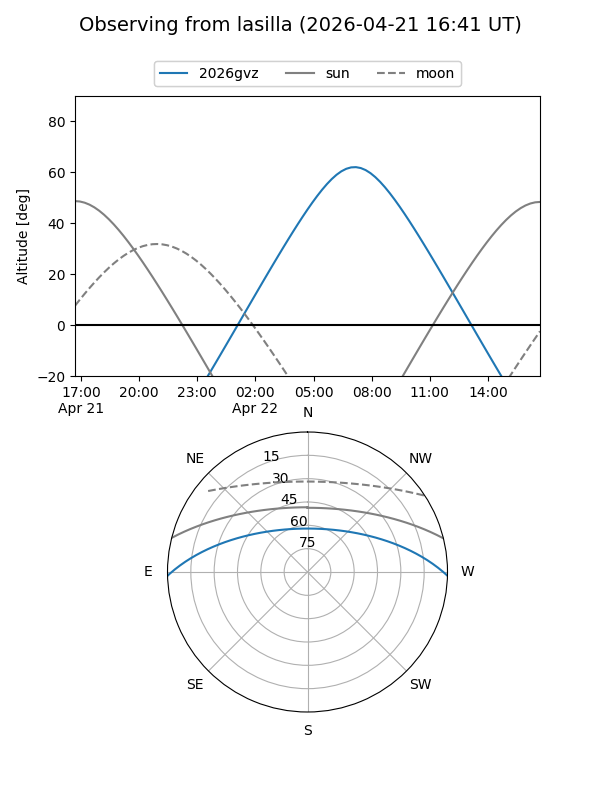
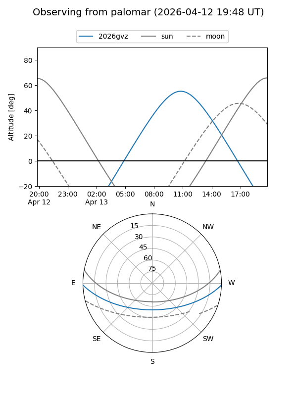
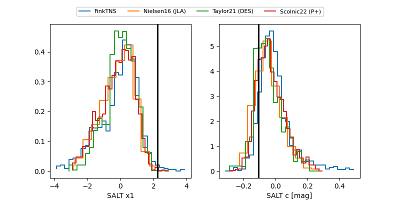

2026gvz
Target 2026gvz at 2026-04-13 02:39
Aliases and brokers:
FINK: link
Lasair: link
ALeRCE: link
TNS: link
YSE: link
alt names
ZTF26aaohidx (ztf,fink_ztf)
2026gvz (tns,yse)
PS26bab (panstarrs)
Coordinates:
equatorial (ra, dec) = 246.0700,-1.26373
equatorial (HMS+DMS) = 16:24:16.81,-01:15:49.41
galactic (l, b) = (12.8544,+31.52070)
Flags:
Photometry:
last ztfg=20.13
2 ztfg detections
Lightcurve

Visibility


Additional plots
